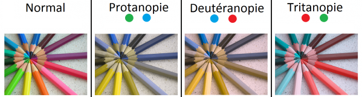

La dyschromatopsie est une anomalie de la vision.
Elle est découverte pour la première fois en 1798 par le physicien John Dalton, et ainsi nommée daltonisme.
 Il existe plusieurs formes de dyschromatopsie partielles : la deutéranopie (incapacité à voir le vert), la protanopie (incapacité à voir le rouge), la tritanopie (incapacité à voir le bleu),... et beaucoup d’autres très peu répandues. De manière générale, elle touche plus les hommes que les femmes.